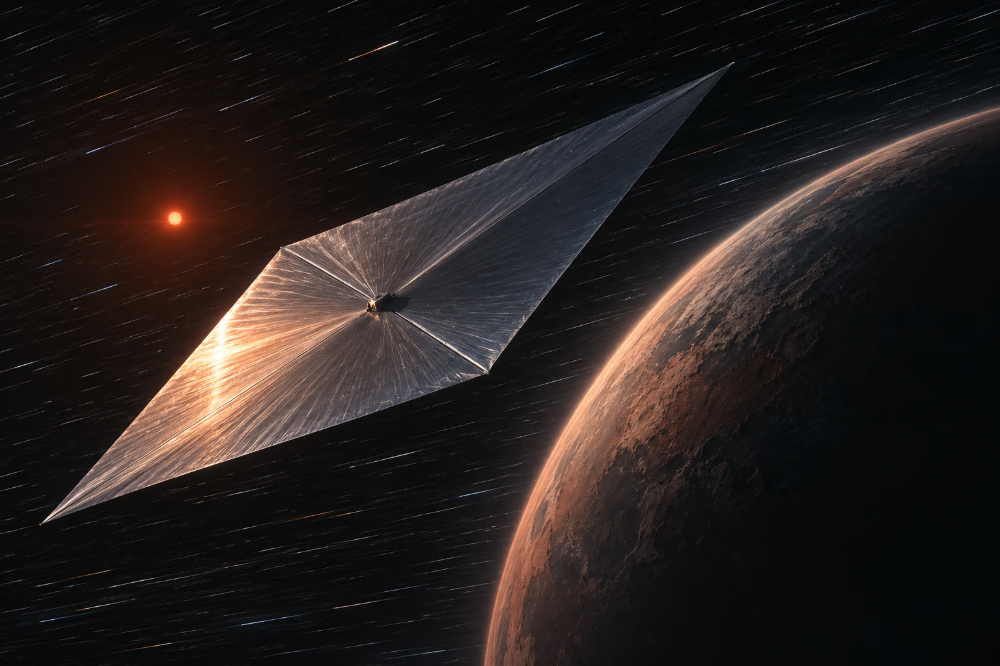
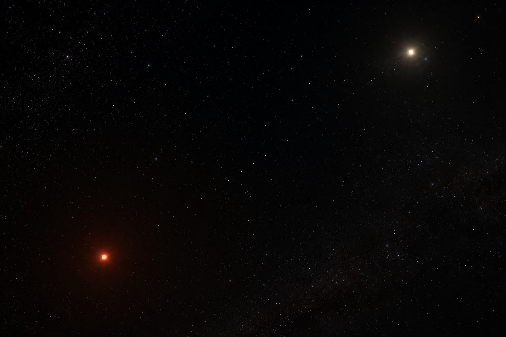

Interstellar travel sounds like a category of problem reserved for centuries we won’t see. For every target but one, that’s true. The exception is close enough to change the conversation.
01The gift horse
Proxima Centauri sits 4.24 light-years away — the closest star to the Sun, and by a wide margin the closest we will ever have. Every other candidate for an interstellar probe is some multiple of that distance farther out. Proxima is the only star system where any propulsion we can plausibly foresee closes the loop in a span a human institution can hold onto.
And it is not just a star. It has a confirmed planet — Proxima b, roughly Earth’s mass, orbiting in the zone where liquid water can exist — along with additional candidates. A real planetary system, next door.
The star itself is easy to underestimate. It’s a red dwarf: small, dim, and ancient, the most common kind of star in the galaxy and the longest-lived by a vast margin. If life turns out to favor these quiet, patient stars — as some models of cosmic habitability suggest it might, precisely because they burn steadily for trillions of years — then the nearest test of that idea is not some distant exotic target. It is the system closest to our own.
Which is the real prize. The question underneath all of this is whether life is rare — whether the chemistry that started here has started anywhere else, even once. A single second example, even microbial, even long dead, would change what we know about our place in the universe more than any other discovery available to us. That measurement is worth almost any expense. Proxima is the closest place we could ever go looking for it.
02Two probes, not one
The instinct is to imagine a single heroic mission. The better architecture is a sequence — because two very different missions answer two very different questions, and we want both.
Within a lifetime. The first probe is fast and light: the most aggressive propulsion we can nearly build — a laser-driven sail accelerated to a fraction of light speed, or a fusion drive if one matures in time — thrown at Proxima on a flyby. Transit on the order of a few decades, plus about four years for the signal to return. Someone alive at launch could read the result within their own life: is there an atmosphere, is there a biosignature, is the planet what we hope. The data would be thin — a flyby at that speed is over in hours, one pass, no second look — but it would be an answer, delivered as fast as physics allows.
The complete picture. The second probe is the opposite: heavier, slower, built to arrive and stay. It decelerates, enters orbit, maps the system over years, perhaps releases a swarm of smaller instruments. This is a century-scale mission. The people who launch it will not see its data; their great-grandchildren will. What it returns is not a snapshot but a survey — the full character of the system, at a depth no flyby can reach. The fast probe tells us whether. The slow probe tells us what.

03Launching early costs nothing
There is an obvious objection to starting now: why send a slow probe today when a faster one, launched decades from now, might overtake it and arrive first? Why not wait for better propulsion?
Because you cannot schedule a breakthrough. You do not know if it is coming, or when, and a mission deferred until the technology is ideal is a mission that may never launch at all. So you send the best you have now. If no breakthrough arrives, the early probe is the only probe, and its data is data you would otherwise not have. If a breakthrough does arrive, later probes overtake the earlier ones in flight — and now you have not one arrival but a staggered stream of them, the old probe becoming an earlier baseline against which the newer results are read. Sent early, it is never wasted. It is either the mission or the first measurement in a series.
04What it actually costs
The serious attempt at this — a program to send gram-scale probes to Alpha Centauri — was organized around a figure near a hundred million dollars. For the highest-stakes measurement available to our species, that is not a large number. It is a rounding error against things we fund without debate. And even that program spent only a small fraction of its pledge before stalling.
Which points at the real barrier, and it is not money and it is not physics. A century-scale mission requires an institution that survives long enough to receive it — that stays pointed at a single objective across generations, funding it, tracking it, waiting for it, long after everyone who authorized it is gone. We have never built anything that lasts that way. That, not propulsion, is the thing we would actually have to develop: not a faster engine, but a longer attention span.
05The staggered fleet
So the answer to “when do we send a probe to Proxima” is not a date. It is a cadence. Send the fast one as soon as we can build it, for the answer within a lifetime. Send the slow, complete one for the full picture. And keep sending, each generation of propulsion overtaking the last, until Proxima stops being a target we fired at once and becomes a system under continuous observation — a thread of probes strung out across four light-years, launched decades apart, arriving in sequence, each adding to a picture that sharpens for a century.

It is the closest thing in the universe that could carry the answer to the only question that has ever really mattered about life: whether we are alone. And it is the one interstellar destination we can actually reach.
You don’t look a gift horse like that in the mouth. You send.